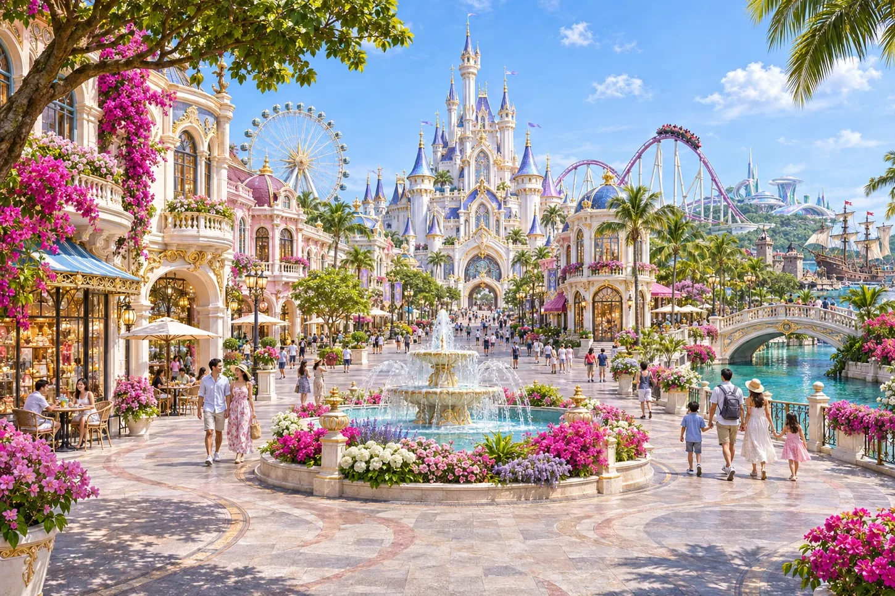
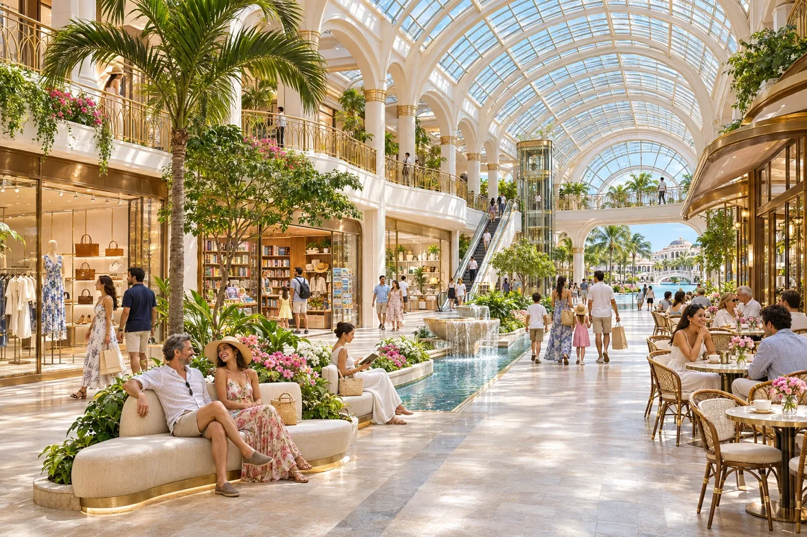
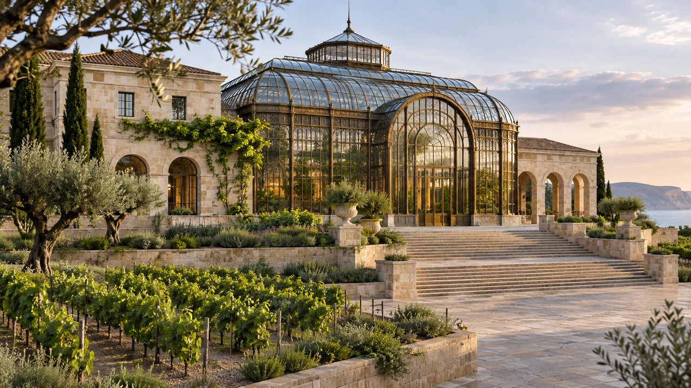

THEME PARK
エデン・ワンダーズ
城下町、SFホログラムの街、海賊の冒険エリアなど、テーマが変わるたびに景色も変わるパーク。昼のライドと、夜の景色は別の楽しみです。
行き方：東エンタメ駅｜パレス中央から列車で約16分

EAST / EDEN ISLAND
遊園地から、街の一杯まで。 城下町、未来都市、冒険の海を一日で。パークを出たあとは、ガレリアや酒文化の庭園へ。
THINGS TO DO
THEME PARK
城下町、SFホログラムの街、海賊の冒険エリアなど、テーマが変わるたびに景色も変わるパーク。昼のライドと、夜の景色は別の楽しみです。
行き方：東エンタメ駅｜パレス中央から列車で約16分

SHOPPING & DINING
遊園地の外に広がる商業街区。買い物や食事を挟んで、朝から夜までそれぞれのペースで過ごせます。
行き方：東エリア｜東エンタメ駅方面

WINE, SPIRITS & CULTURE
ワイン宮殿や蒸留所、世界の酒蔵通り、カクテル劇場で、造り方や香りを知る。ノンアルコール体験もあり、試飲とバーは作中の成人向けです。
行き方：東商業地区に隣接｜試飲は年齢確認あり
交通時間は作中の目安です。記載がない場合、待ち時間・駅から施設への移動は含みません。
KEEP EXPLORING